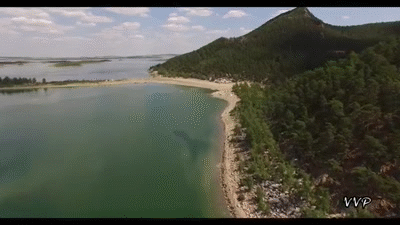
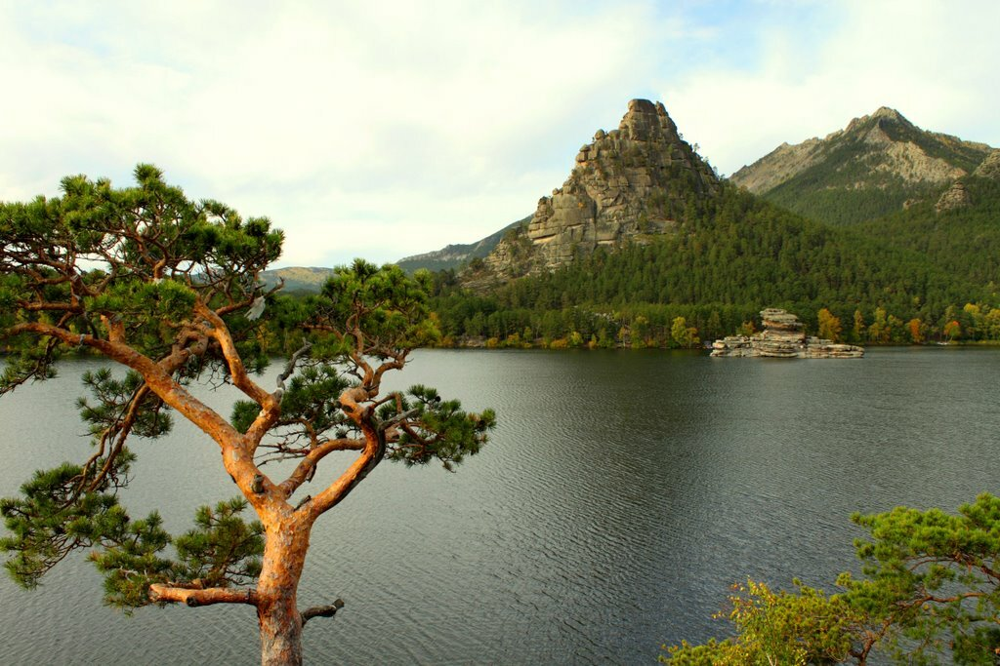

Borovoye itself is located among the steppes of Northern Kazakhstan between the cities of Kokshetau and Astana. It is part of the Akmola region, located close to such regions of Russia as the Urals, Omsk, Tomsk, Tyumen and Novosibirsk regions.
One of the legends says that a magical camel whose name was Bura lived here, the camel was white as snow and very beautiful. Bura guarded the Burabai place, he always warned the locals about the approach of the enemy with a long drawn-out cry. Therefore, people in this region have always lived in peace and tranquility. One day, robbers came to Burabay, they heard that a magical white camel lives here and they wanted to catch it for a trophy. The robbers set a trap and began to wait for the camel to come to the watering place, when the camel went down the mountain to drink water, the robber shot him with an arrow from a bow. The arrow went through and at that moment the camel turned into a huge rock, and covered the robbers with itself.

Borovoye is a real oasis in the middle of the Kazakh steppe. This amazingly beautiful place is located on the territory of the Burabay park. The resort attracts guests with its pristine nature, clean air, lakes, picturesque mountain peaks, green coniferous forests. Locals call this corner "Kazakh Switzerland".

The Burabay resort is a paradise for fishing enthusiasts. The entire tract is filled with hills densely overgrown with coniferous trees, similar to frozen fairy-tale giants, as well as 14 enchanted lakes, the deepest of which is Lake Shchuchye, its depth reaches 28 meters.